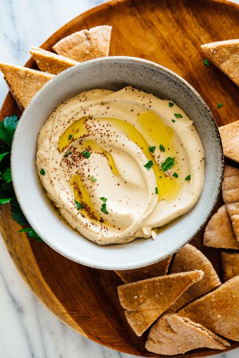

Hummus

The best hummus is lusciously creamy, yet somehow light and fluffy.
It’s beautifully smooth and swirled, and begging to be scooped up onto a wedge of pita bread.
It’s nutty and tangy, thanks to the tahini, with notes of bright, fresh lemon and mellow garlic.
Ingredients
- 1 can (15 oz) chickpeas rinsed and drained
- 1/2 teaspon baking soda
- 1/4 cup lemon juice (more to taste)
- 1 medium-to-large garlic clove, roughly chopped (I usually triple this)
- 1/2 teaspon fine sea salt, to taste
- 1/2 cup of tahini
- 2 to 4 tablespoons ice water, more as needed
- 1/2 teaspon ground cumin
- 1 tablespoon extra-virgin olive oil
- Any of the following garnishes: drizzle of olive oil or zhoug sauce, sprinkle of ground sumac or paprika, chopped fresh parsley